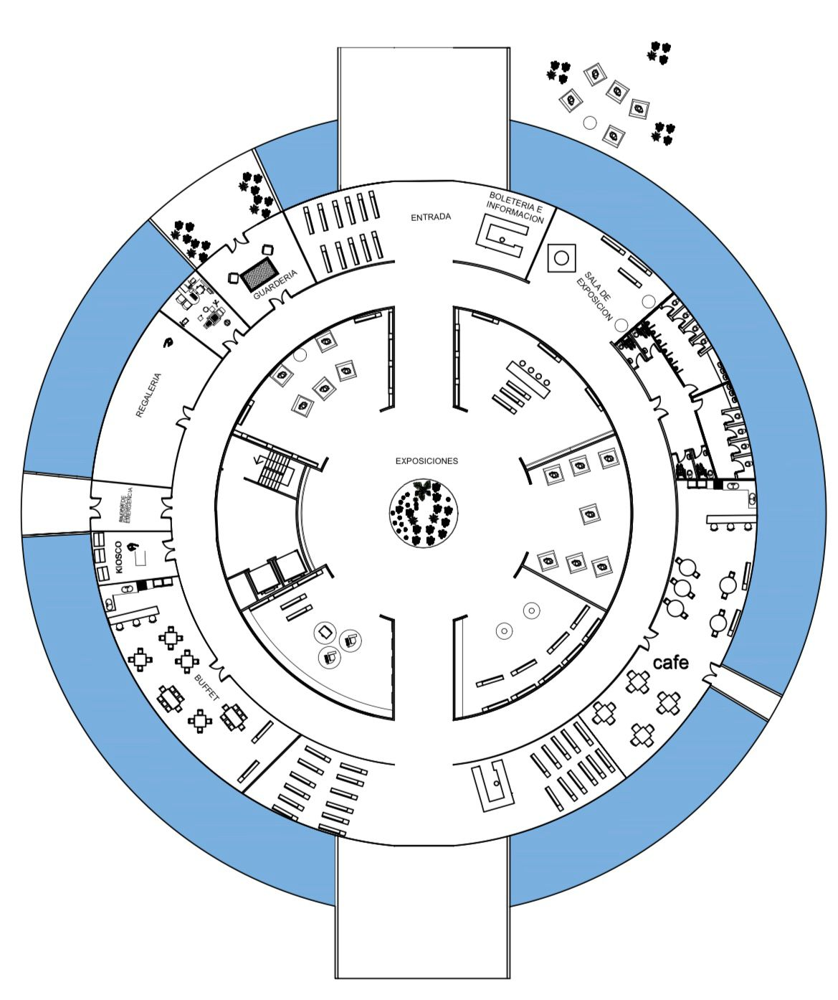
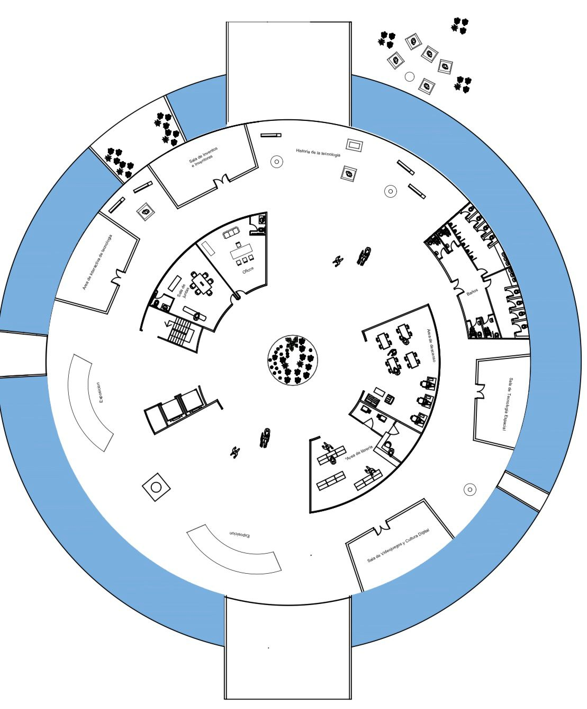
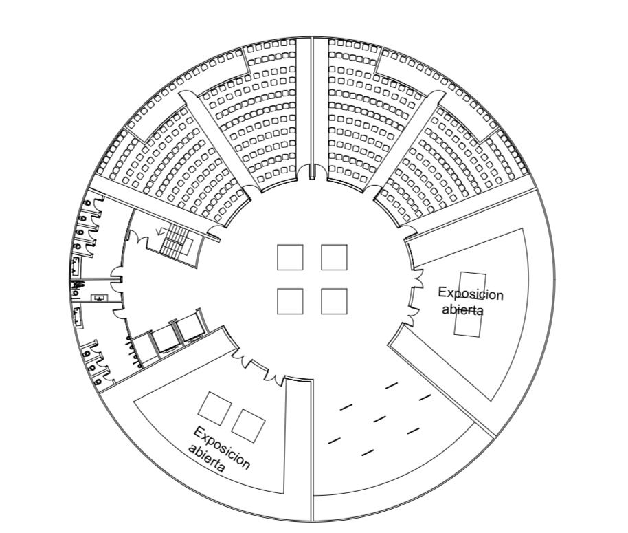

Modelos 3D del Museo


Visualiza las diferentes perspectivas de Modelos 3D de Nexus Desarrollos.
Explora Nuestros Pisos
EN LA PLANTA BAJA PODEMOS ENCONTRAR VARIOS SECTORES PARA QUE LA GENTE PUEDA DISFRUTAR DE UN GRATO PASEO Y UNA EXCELENTE COMIDA , DISPONEMOS DE UNA GUARDERÍA DONDE CUIDAMOS Y ENSEÑAMOS DE LA HISTORIA DEL MUSEO , DESDE UN PUNTO DIVERTIDO PARA LOS NIÑOS
EN EL PRIMER PISO PODEMOS ENCONTRAR CON DIFERENTES MIRADAS DE LA TECNOLOGÍA, PARA QUE EXPLOREN Y SE SIENTAN CÓMODOS
EN EL SEGUNDO PISO PODEMOS ENCONTRAR TODO TIPO DE ARTE , TAMBIÉN UN TEATRO DONDE PODRÁN DISFRUTAR DEL ARTE EN EL TIEMPO

EN EL ÚLTIMO PISO ENCONTRAMOS UN AUDITORIO DONDE SE TRANSMITE LA HISTORIA DE LOS PLANETAS , ESTE PISO TIENE DIFERENTES TEMÁTICAS PARA DISFRUTAR
